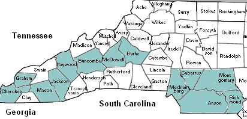

Home
|
Research
|
Lineages
|
Contact
Long Family of North Georgia
Research

North Carolina
Click on the county to view research
Note: The county lines of Montgomery and Anson have been expanded to reflect the earlier historical boundaries (incorporating Stanly and Union Counties)